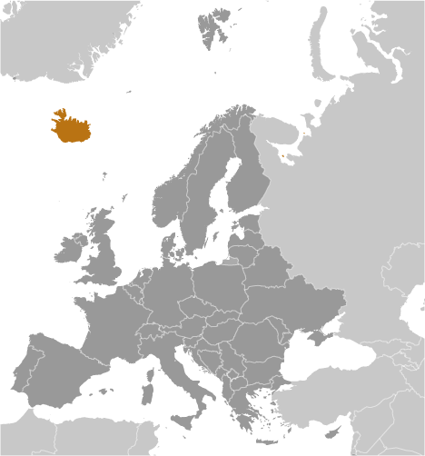
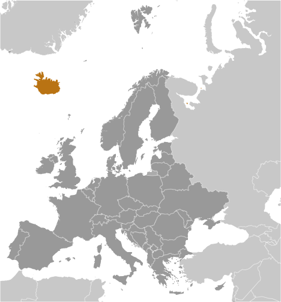

country name
- conventional long form: Republic of Iceland
- conventional short form: Iceland
- local long form: Lydveldid Island
- local short form: Island
- etymology: Floki VILGERDARSON, an early explorer of the island (9th century), applied
the name "Land of Ice" after spotting a fjord full of drift ice to the north and spending
a bitter winter on the island; he eventually settled on the island, however, after
he saw how it greened up in the summer and that it was, in fact, habitable
government type
unitary parliamentary republic
capital
- name: Reykjavik
- geographic coordinates: 64 09 N, 21 57 W
- time difference: UTC 0 (5 hours ahead of Washington, DC, during Standard Time)
- etymology: the name means "smoky bay" in Icelandic and refers to the steamy, smoke-like
vapors discharged by hot springs in the area
administrative divisions
74 municipalities (sveitarfelog, singular - sveitarfelagidh); Akrahreppur, Akraneskaupstadhur,
Akureyrarkaupstadhur, Arneshreppur, Asahreppur, Blaskogabyggdh, Blonduosbaer, Bolungarvikurkaupstadhur,
Borgarbyggdh, Borgarfjardharhreppur, Breidhdalshreppur, Dalabyggdh, Dalvikurbyggdh,
Djupavogshreppur, Eyjafjardharsveit, Eyja-og Miklaholtshreppur, Fjallabyggdh, Fjardhabyggdh,
Fljotsdalsheradh, Fljotsdalshreppur, Floahreppur, Gardhabaer, Grimsnes-og Grafningshreppur,
Grindavikurbaer, Grundarfjardharbaer, Grytubakkahreppur, Hafnarfjardharkaupstadhur,
Helgafellssveit, Horgarsveit, Hrunamannahreppur, Hunathing Vestra, Hunavatnshreppur,
Hvalfjardharsveit, Hveragerdhisbaer, Isafjardharbaer, Kaldrananeshreppur, Kjosarhreppur,
Kopavogsbaer, Langanesbyggdh, Mosfellsbaer, Myrdalshreppur, Nordhurthing, Rangarthing
Eystra, Rangarthing Ytra, Reykholahreppur, Reykjanesbaer, Reykjavikurborg, Sandgerdhisbaer,
Seltjarnarnesbaer, Seydhisfjardharkaupstadhur, Skaftarhreppur, Skagabyggdh, Skeidha-og
Gnupverjahreppur, Skorradalshreppur, Skutustadhahreppur, Snaefellsbaer, Strandabyggdh,
Stykkisholmsbaer, Sudhavikurhreppur, Svalbardhshreppur, Svalbardhsstrandarhreppur,
Sveitarfelagidh Arborg, Sveitarfelagidh Gardhur, Sveitarfelagidh Hornafjordhur, Sveitarfelagidh
Olfus, Sveitarfelagidh Skagafjordhur, Sveitarfelagidh Skagastrond, Sveitarfelagidh
Vogar, Talknafjardharhreppur, Thingeyjarsveit, Tjorneshreppur, Vestmannaeyjabaer,
Vesturbyggdh, Vopnafjardharhreppur
independence
1 December 1918 (became a sovereign state under the Danish Crown); 17 June 1944 (from
Denmark; birthday of Jon SIGURDSSON, leader of Iceland's 19th Century independence
movement)
national holiday
Independence Day, 17 June (1944)
constitution
- history: several previous; latest ratified 16 June 1944, effective 17 June 1944 (at
independence)
- amendments: proposed by the Althingi; passage requires approval by the Althingi and
by the next elected Althingi, and confirmation by the president of the republic; proposed
amendments to Article 62 of the constitution – that the Evangelical Lutheran Church
shall be the state church of Iceland – also require passage by referendum; amended
many times, last in 2013 (2016)
legal system
civil law system influenced by the Danish model
international law organization participation
has not submitted an ICJ jurisdiction declaration; accepts ICCt jurisdiction
citizenship
- citizenship by birth: no
- citizenship by descent only: at least one parent must be a citizen of Iceland
- dual citizenship recognized: yes
- residency requirement for naturalization: 3 to 7 years
suffrage
18 years of age; universal
executive branch
- chief of state: President Gudni Thorlacius JOHANNESSON (since 1 August 2016)
- head of government: Prime Minister Katrin JAKOBSDOTTIR (since 30 November 2017)
- cabinet: Cabinet appointed by the president upon the recommendation of the prime minister
- elections/appointments: president directly elected by simple majority popular vote
for a 4-year term (no term limits); election last held on 25 June 2016 (next to be
held in June 2020); following legislative elections, the leader of the majority party
or majority coalition becomes prime minister
- election results: Gudni Thorlacius JOHANNESSON elected president; percent of vote
- Gudni Thorlacius JOHANNESSON 39.1%, Halla TOMASDOTTIR 27.9%, Andri Snaer MAGNASON
14.3%, David ODDSSON 13.7%, Sturla JONSSON 3.5%, invalid 1.5%
legislative branch
- description: unicameral Althingi or Parliament (63 seats; members directly elected
in multi-seat constituencies by proportional representation vote to serve 4-year terms)
- elections: last held on 28 October 2017 (next to be held in 2021)
- election results: percent of vote by party - IP 25.2%, LGM 16.9%, SDA 12.1%, CP 10.9%,
PP 10.7%, Pirate Party 9.2%, People's Party 6.9%, Reform Party 6.7%. other 1.5%; seats
by party - IP 16, LGM 11, SDA 7, CP 7, PP 8, Pirate Party 6, Reform Party 4, People's
Party 4
judicial branch
- highest courts: Supreme Court or Haestirettur (consists of 9 judges)
- judge selection and term of office: judges proposed by Ministry of Interior selection
committee and appointed by the president; judges appointed for an indefinite period
- subordinate courts: Appellate Court or Landsrettur; 8 district courts; Labor Court
political parties and leaders
Centrist Party (Midflokkurinn) or CP [Sigmundur David GUNNLAUGSSON] Independence Party
(Sjalfstaedisflokkurinn) or IP [Bjarni BENEDIKTSSON] Left-Green Movement (Vinstrihreyfingin-graent
frambod) or LGM [Katrin JAKOBSDOTTIR] People's Party (Flokkur Folksins) [Inga SAELAND]
Pirate Party (Piratar) [rotating leadership] Progressive Party (Framsoknarflokkurinn)
or PP [Sigurdur Ingi JOHANNSSON] Reform Party (Vidreisn) [Thorgerdur Katrin GUNNARSDOTTIR]
Social Democratic Alliance (Samfylkingin) or SDA [Logi Mar EINARSSON]
international organization participation
Arctic Council, Australia Group, BIS, CBSS, CD, CE, EAPC, EBRD, EFTA, FAO, FATF, IAEA,
IBRD, ICAO, ICC (national committees), ICCt, ICRM, IDA, IFAD, IFC, IFRCS, IHO, ILO,
IMF, IMO, IMSO, Interpol, IOC, IOM, IPU, ISO, ITSO, ITU, ITUC (NGOs), MIGA, NATO,
NC, NEA, NIB, NSG, OAS (observer), OECD, OPCW, OSCE, PCA, Schengen Convention, UN,
UNCTAD, UNESCO, UPU, WCO, WHO, WIPO, WMO, WTO
diplomatic representation in the us
- Ambassador Geir Hilmar HAARDE (since 23 February 2015)
- chancery: House of Sweden, 2900 K Street NW, #509, Washington, DC 20007
- telephone: [1] (202) 265-6653
- FAX: [1] (202) 265-6656
- consulate(s) general: New York
diplomatic representation from the us
- chief of mission: Ambassador Jeffrey Ross GUNTER (since 2 July 2019)
- telephone: [354] 595-2200
- embassy: Laufasvegur 21, 101 Reykjavik
- mailing address: US Department of State, 5640 Reykjavik Place, Washington, D.C. 20521-5640
- FAX: [354] 562-9118
flag description
blue with a red cross outlined in white extending to the edges of the flag; the vertical
part of the cross is shifted to the hoist side in the style of the Dannebrog (Danish
flag); the colors represent three of the elements that make up the island: red is
for the island's volcanic fires, white recalls the snow and ice fields of the island,
and blue is for the surrounding ocean
national symbol s
gyrfalcon; national colors: blue, white, red
national anthem
- name: "Lofsongur" (Song of Praise)
- lyrics/music: Matthias JOCHUMSSON/Sveinbjorn SVEINBJORNSSON
- note: adopted 1944; also known as "O, Gud vors lands" (O, God of Our Land), the anthem
was originally written and performed in 1874
 
